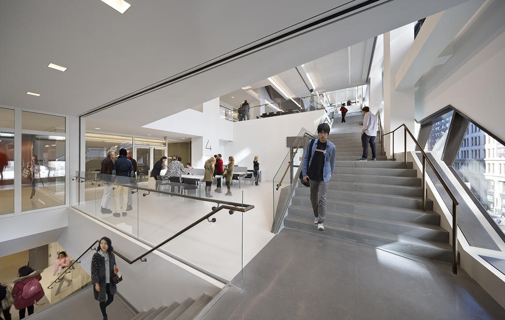
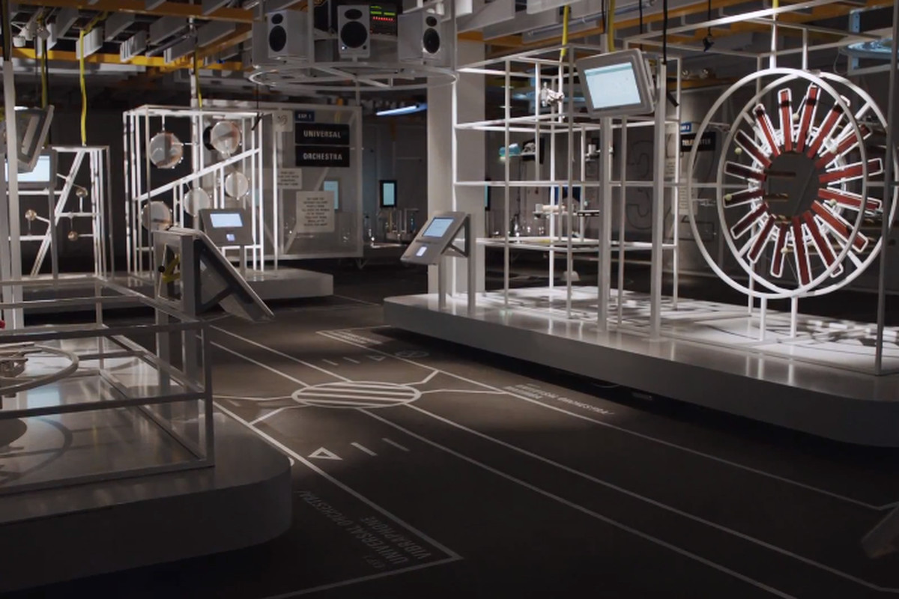

A smart space as a physical or digital environment in which humans and technology-enabled systems interact in a connected and intelligent ecosystem. More specifically, this combines multiple elements of a business – people, processes, services and things – into a single platform for a more collaborative, immersive and automated experience. A built environment with embedded services for mobile users – Merge the physical and digital worlds.
The idea of a smart space has been popularised by concepts such as smart cities, smart homes and connected factories but is now extending into productivity tools.
One example is the use of a collaboration platform within an organisation to communicate, share content and work together on projects. These tools can be accessed on multiple devices at any time, furthering the idea of a smart space as a digital experience that isn’t confined to the boundary of a single computer or smartphone.

 Insight Digital WorkspaceTM (IDW) is an example of how a smart space can aid digital transformation. IDW is more than just a collaboration tool, it’s an intelligent hub that brings together the applications and information relevant to an individual’s everyday tasks.
The SATE conference, in New York City, was created by the Themed Entertainment Association (TEA) to foster professional dialog about the methodology of Experience Design. SATE stands for Story + Architecture + Technology = Experience. The following is curated from a presentation entitled, “Creating Smart Spaces: Architectural-scale interactivity in process and practice”.
Digital technology like streaming media has been feeding that desire, providing the ability to share experiences in real-time to help us feel more connected,” “But in many ways, these experiences are trapped in a device that keeps us from fully participating in the experience. To have a digital experience take us out of the present moment flies in the face of thousands of years of human evolution. It seems we’re being asked to choose between being human or being digital. I don’t think this is what we imagined when we talk about the future of shared digital experiences. We should be able to use technology to bring people together in the same space and to interact with our environment and expand our minds. We call these enlightened environments ‘smart spaces’ and they exist at the intersection of architecture, technology, and experience design. Since the advent of the smartphone ‘super-computer’ and streaming media, people’s perceptions of a satisfying experience have been radically altered
Examples:
Terms of user experience, this meant that visitors were encouraged to actively move around and explore the museum space rather than remain static, the way we are used to forming a majority of contemporary digital experiences. The participants in my user-centred evaluation seemed to appreciate this by claiming that the application enriched their experience and that they would like to use similar applications more frequently. In fact, the evaluation, in general, revealed that people are surprisingly open towards this new technology. 5. Conclusion The much-quoted media philosopher Marshall McLuhan (1964) supposedly remarked that “we become what we behold. We shape our tools and then our tools shape us”. The truth behind this message has perhaps never been more apparent than it is today. We are going through a unique time in mankind's technological history and just as the technology we are using changes, we are changing with it. The information technology explosion has greatly increased our interconnection and in turn our understanding of the world around us. Whereas the desktop age pushed us towards a state where our interactions with digital data occurred under relatively isolated conditions, such as while at work or at home, the shift towards mobile computing is making immersion with computing into a permanent state penetrating practically every aspect and environment of our daily lives. The real and the 19 virtual, two entities that have existed relatively separately since the dawn of computing, are thus now becoming increasingly bridged.

Autonomous things, such as robots, drones and autonomous vehicles, use AI to automate functions previously performed by humans. Their automation goes beyond the automation provided by rigid programming models and they exploit AI to deliver advanced behaviours that interact more naturally with their surroundings and with people.